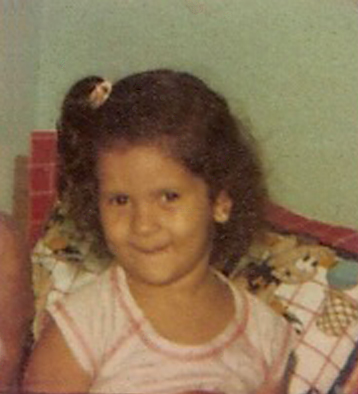
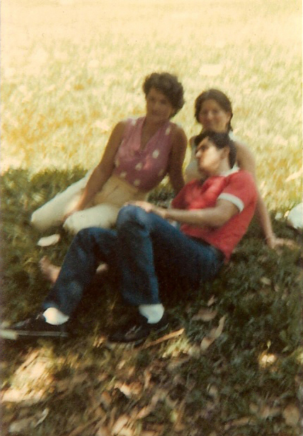

Paraty
Paraty – Três viagens, três experiências inesquecíveis
Minha primeira aventura até Paraty aconteceu em julho de 2013, quando eu estava de férias na casa do meu irmão Francisco, em Ubatuba.
Em uma manhã de céu limpo, temperatura agradável e muito sol, acordei com vontade de pedalar. Peguei a bicicleta e saí em direção ao centro de Ubatuba. No caminho, surgiu uma ideia que parecia um desafio: por que não seguir até Paraty?
Da casa do meu irmão até Paraty são aproximadamente 86 quilômetros. Continuei pedalando pela BR-101, cercado pelas belas paisagens do litoral norte paulista e da Costa Verde fluminense. O percurso foi cansativo, mas extremamente prazeroso. Cheguei a Paraty por volta do meio-dia.
Como havia saído sem avisar para onde iria, enquanto almoçava recebi uma ligação da minha cunhada, Irene, preocupada com meu paradeiro. Quando contei que estava em Paraty, ela perguntou como eu havia chegado até lá. Ao responder que tinha ido de bicicleta, ela simplesmente não acreditou.
Depois do almoço, procurei uma pousada para passar a noite. Em seguida, levei a bicicleta a uma oficina para fazer alguns ajustes antes de sair para conhecer melhor a cidade.
Passeei tranquilamente pelo centro histórico, caminhando entre as ruas de pedra, admirando o casario colonial e o charme único de Paraty. Naqueles dias acontecia a tradicional Festa Literária Internacional de Paraty (FLIP), e a cidade estava repleta de atrações culturais. À noite, assisti a um dos shows do evento, mas o frio aumentou bastante. Como eu estava usando apenas bermuda e camiseta, não consegui permanecer por muito tempo e resolvi voltar para a pousada.
Na manhã seguinte, depois do café, montei novamente na bicicleta e iniciei o retorno para Ubatuba, encerrando uma aventura que jamais esquecerei.
O desafio do bate e volta
Cinco anos depois, em 2018, resolvi repetir a experiência, mas desta vez com um desafio ainda maior: fazer o percurso de ida e volta no mesmo dia.
Levantei bem cedo e saí da casa do meu irmão determinado a completar aproximadamente 170 quilômetros de pedal. Já estava mais preparado física e mentalmente para enfrentar a distância.
Cheguei a Paraty pouco antes do meio-dia. Caminhei um pouco pelo centro histórico, almocei com calma, descansei por alguns minutos e, em seguida, iniciei a viagem de volta.
Mais uma vez, o percurso foi recompensado pelas paisagens exuberantes da BR-101. Ao longo da estrada, é possível contemplar praias de águas cristalinas, costões rochosos, a exuberante Mata Atlântica e as montanhas da Serra do Mar, formando um dos cenários mais bonitos do litoral brasileiro.
Retorno em família
Em 2021, voltei a Paraty pela terceira vez, mas dessa vez na companhia da Teresa. O trajeto foi o mesmo, porém viajamos de carro.
Naquele período, o Brasil ainda vivia os reflexos da pandemia de COVID-19. Muitos estabelecimentos funcionavam com restrições, e o uso de máscaras ainda era obrigatório em diversos ambientes.
Mesmo assim, conseguimos aproveitar bastante o passeio. Caminhamos pelo centro histórico, conhecemos vários pontos turísticos e ainda tivemos tempo para praticar tirolesa e arvorismo, atividades que tornaram o dia ainda mais divertido.
No final da tarde retornamos para Ubatuba. Embora a aventura de bicicleta tenha sido inesquecível, fazer o passeio de carro proporcionou muito mais conforto e nos permitiu aproveitar a viagem de uma forma diferente.
Cada uma dessas visitas teve um significado especial. Seja pedalando pela belíssima BR-101 ou passeando tranquilamente pelas ruas históricas, Paraty sempre proporciona experiências marcantes e deixa a vontade de voltar mais uma vez.
Rio de Janeiro de 1985

Letícia com a Lilian

Lilian aos 2 anos
Voltei ao Rio de Janeiro in 1985. Já era um cara mais “descolado" e sabia me virar bem. Não me lembro da Lilian em 1983, quando estive lá, mas sei que ela estava com uns 2 anos de idade agora. A Valda, minha irmã, também estava lá. Lembro que nós fomos passear no Jardim Botânico: eu, ela e a Iracema, irmã do Osvaldo. Recordo que a cidade ainda estava bastante agitada devido ao Rock in Rio, maior festival de música do Brasil e do mundo. Dava para ver camisetas estampadas com o símbolo do Rock in Rio nas lojas de rua e bancas espalhadas pela cidade.

Eu e Lilian

Lilian

Eu, Valda e Iracema

Iracema, Lilian e Letícia
Rio de Janeiro de 1983
Em 30 de julho de 1983, com pouco mais de 6 meses trabalhando no Hotel Normandi, fui demitido. Aproveitei a ocasião para visitar o Francisco em Ubatuba. Logo que voltou, quis ir para o Rio de Janeiro visitar a Letícia também. Passei alguns dias por lá e, como sempre, onde eu ia me perdia. Quando cheguei na rodoviária, pedi informação de como chegar no endereço onde a Letícia morava. Os cariocas são muito bons para dar informação; só não me colocaram dentro do ônibus. Mas, como eu era atrapalhado, acabei passando direto do ponto onde deveria descer e fui até o ponto final do ônibus, que ficava no morro da Rocinha. Eu não fazia a menor ideia do que era aquele lugar. A Letícia morava na Travessa Kátia, na Gávea. Desembarquei e, mais uma vez, fui pedir informação. Mostrei o papel com o endereço para um rapaz, e ele quis saber o que era lá. Contei que era o bar do meu cunhado Osvaldo. Ele disse "eu conheço, só que é bem longe" e me mostrou por onde teria que ir. Em seguida, disse "não vou deixar você ir só, vou te acompanhar". Só bem depois fui entender a preocupação do rapaz. Enquanto descíamos pelas vielas, o rapaz foi abordado algumas vezes por alguns sujeitos querendo saber quem eu era. Imagina se eu tivesse ido sozinho.

Edleusa

Eu e Edimilson bar do Osvaldo 1983
Edleuza, filha do Sr. Juvenal e da Dona Antônia, de uma família muito amiga da nossa, teve uma morte prematura. Eu frequentava muito a casa deles e era muito amigo dos irmãos dela. Foi nesta ida ao Rio que encontrei o Edmilson. Nós éramos muito amigos, mas depois não tive mais notícias dele. Enquanto estava lá, encontrei com ele umas duas vezes. Em uma delas, ele me levou ao morro do Vidigal e me apresentou alguns amigos dele, um tanto suspeitos. Acho que ele já estava metido em alguns rolos.